Html e Css Básico
Para criar uma página web geralmente usamos o Html, o Css e o JavaScript, todos juntos e integrados. Nesse capítulo estudaremos o básico do Html e do Css. Basicamente o Html é o conteúdo apresentado no site, como títulos, parágrafos, imagens, etc. O Css é responsável pelo design do site, como cores de texto e fundo, tamanho de fontes, espaçamento entre parágrafos, etc.
Como funciona o HTML
O Html funciona através de um documento HTML, ou seja, um documento com a extensão .html, o navegador faz a leitura do arquivo e renderiza o seu conteúdo para que o usuário final possa visualizá-lo. Os arquivos .html podem ser visualizados em qualquer navegador (como Google Chrome, Safari, ou Mozilla Firefox).
Geralmente um site é composto por diversas páginas HTML, como por exemplo: um website que contenha três páginas (uma homepage, uma página de contato e uma página de produtos) receberá ao menos três documentos .html distintos, sendo uma para cada página do website.
O Html trabalha com tags (também chamados de elementos) que podem ser considerados os blocos de construção das páginas. Alguns exemplos de tags:
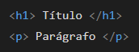
A maioria das tags são compostas por uma estrutura de abertura e uma de fechamento:
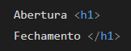
Há também tags de estrutura única, como a tag br que realiza uma quebra de linha.
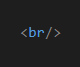
Digamos que você queria escrever um paragrafo, chamamos então a tag p, escrevemos o paragrafo e finalmente fechamos a tag:
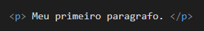
Principais tags (Existem mais de 140 tags em Html)
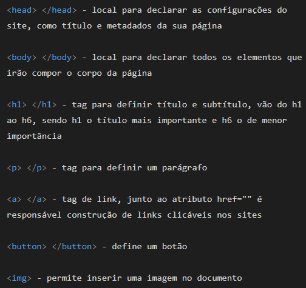
A estrutura básica de um documento HTML
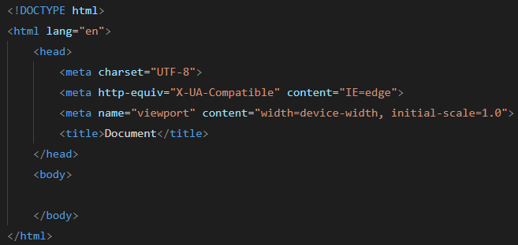
O DOCTYPE Html é uma declaração para informar ao navegador qual é a versão do HTML utilizada no arquivo. Essa declaração vem antes das tags HTML, portanto, geralmente é apresentada na primeira linha de um código.
O atributo lang ajuda a definir o idioma de um elemento, a língua em que elementos devem ser escritos pelo usuário.
O elemento head recebe todas as informações básicas da página, como o título, links de elementos externos, metadados, etc.
Para que não ocorram erros de renderização ou incompatibilidade de caracteres, devemos também declarar o padrão de teclado. No Brasil e em boa parte da América Latina, utilizamos o padrão UTF-8. Dessa forma, através da tag de metadados meta, vamos declarar dentro de um atributo charset que nosso padrão é o UTF-8.
As duas próximas tags que estão dentro do meta não são importantes para esse momento. Só devem ser escritas.
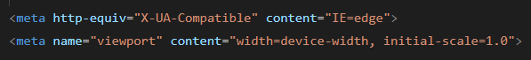
A tag title é onde você irá colocar o título do site e se localizará no topo do navegador.
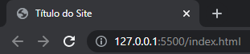
Entre a tag body é onde ficará o corpo do site, é a parte que será visível no navegador.
No editor de código Visual Studio Code, temos um comando que nos trás a estrutura do HTML pronto para usar, sem precisarmos escrever linha por linha. Digite um ponto de exclamação e espere aparecer a seguinte tela:
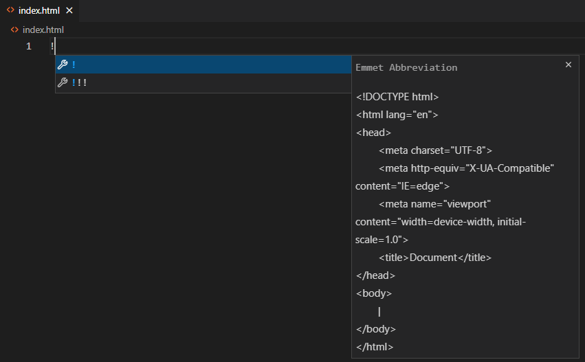
Em seguida aperte enter, então a estrutura HTML irá aparecer sem precisarmos digitar.
Agora faremos o nosso primeiro site.
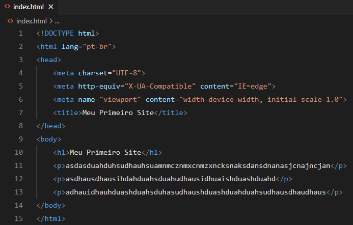
Note que houve uma mudança em lang.
pt-br, significa que a linguagem dos elementos agora é em português.
Dentro do título title digitamos "Meu Primeiro Site".
Dentro do body temos um h1 (título) e 3 parágrafos.
Ao abrir o arquivo html através do navegador, o site ficará assim:
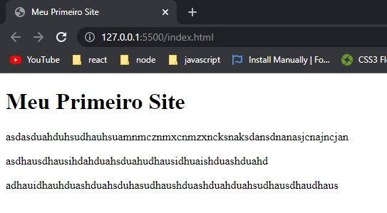
Css Básico
O seletor aponta para o elemento HTML que você deseja estilizar. O bloco de declaração fica entre as chaves { }. As declaraçções ficam dentro do bloco e são separadas por ponto e vírgula.
Cada declaração inclui um nome de propriedade CSS e um valor, separados por dois pontos.
No exemplo abaixo, o seletor é o body e a declaração background-color serve para mudar a cor de fundo do seletor. O valor aqua é o nome da cor.
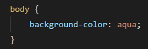
Existem três maneiras que você pode usar para implementar o CSS: interno, externo e inline.
O CSS interno ou incorporado requer que você adicione a tag style na seção head do seu documento HTML.
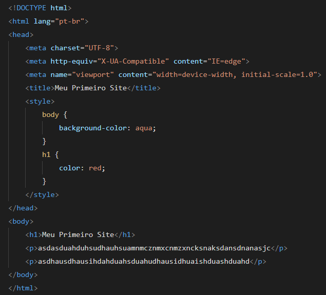
Ao abrir o arquivo no navegador:
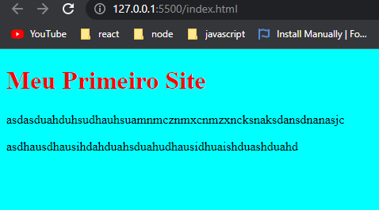
Css Inline - para este estilo de CSS você somente vai precisar adicionar o atributo style para cada tag HTML, sem usar os seletores. Este tipo de CSS não é recomendado.
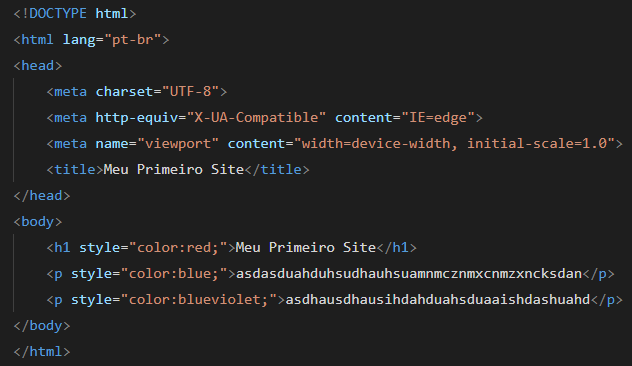
Ao abrir o arquivo no navegador:

Com o CSS externo, você vai linkar a página Html com um arquivo .css externo. Este tipo de CSS é o método mais eficiente, especialmente se você está estilizando um site grande. Ao editar um arquivo .css, você pode modificar um site inteiro de uma só vez.
Primeiramente devemos criar o arquivo .css, nesse caso criaremos o arquivo style.css.
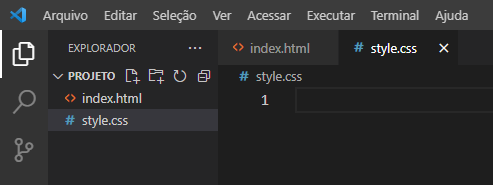
O segundo passo é incluir o comando de criação dentro da tag head. O Visual Studio Code nos ajuda com essa criação apenas digitando a palavra link e clicando em link:css.
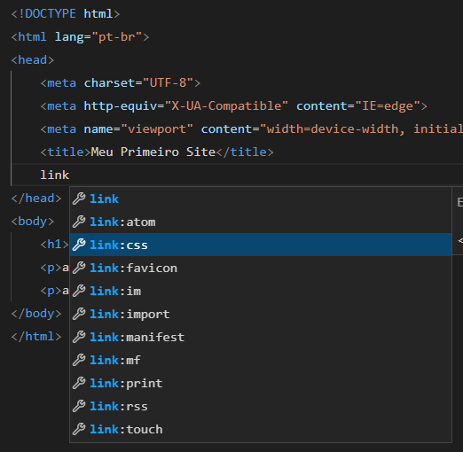
O comando aparecerá dessa forma:
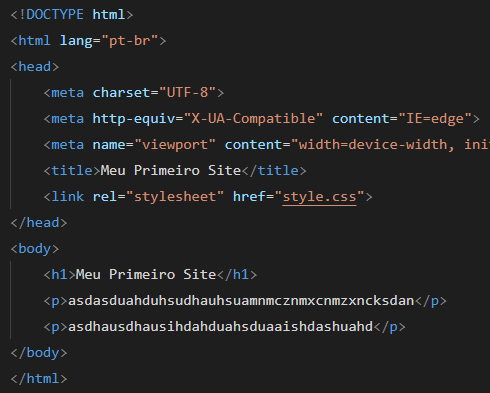
href é o local onde o arquivo css se encontra. Como o arquivo style.css se encontra na mesma pasta em que o arquivo index.html, basta escrever da forma que está na imagem.
Agora com tudo configurado, podemos iniciar as declarações dentro do arquivo style.css.
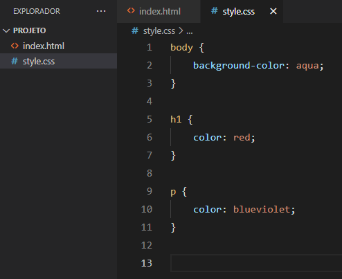
Iremos mexer em 3 seletores, o body, h1 e o p.
O body é corpo da página, é a parte visível do site. Nele declaramos a cor de fundo (background-color) como aqua.
O h1 é o título da página, nele declaramos que a cor da fonte é vermelha.
O p é o parágrafo, nele declaramos que a cor da fonte é blueviolet.
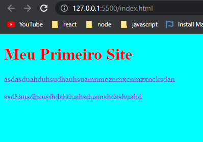
Alguns Comandos em Css
color ➜ edita a cor da fonte.
background-color ➜ edita a cor do fundo.
width ➜ edita a largura do elemento.
height ➜ edita a altura do elemento.
font-family ➜ edita o tipo da fonte. Ex: Arial, Times New Roman, Georgia, Impact.
font-size ➜ edita o tamanho da fonte.
font-weight ➜ especifica o peso ou a intensidade da fonte (ex.: negrito).
border ➜ é utilizada para adicionar um contorno ao elemento.
Class e Id
Até agora aplicamos os estilos somente nos seletores body, h1 e p. Mas há outros tipos de seletores que são muito utilizados em Html e Css, são as classes e id's.
As classes são uma forma de identificar um grupo de elementos. Através delas, pode-se atribuir formatação a VÁRIOS elementos de uma vez. O atributo class="paragrafo" é escrito dentro da tag de abertura, no exemplo abaixo foi escrito dentro da tag de abertura p.
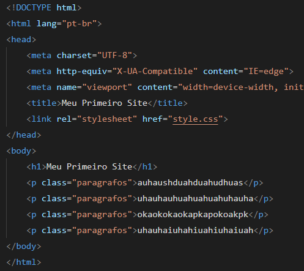
No arquivo style.css, temos o seletor .paragrafos que faz referência aos parágrafos que receberam class="paragrafos" no arquivo Html.
O ponto (.) antes do paragrafo (dentro do arquivo css) informa que é uma classe. Logo, todos os elementos receberão a configuração color: green;.
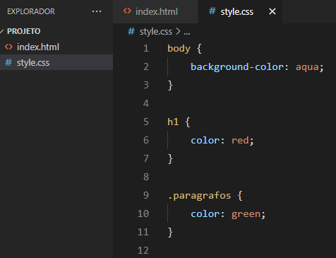
Aqui temos todos os parágrafos na cor verde.
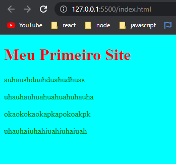
Já os id's, identificam apenas um único elemento.
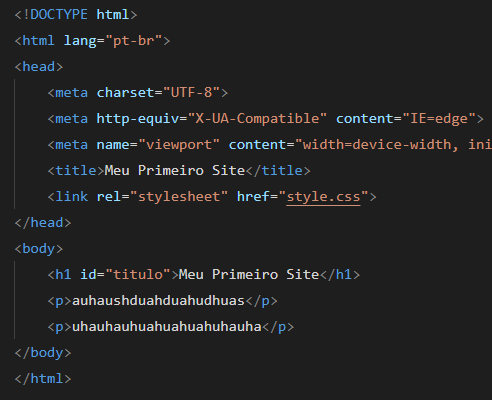
No arquivo style.css, temos o seletor #titulo que faz referência ao título que recebeu id="titulo" no arquivo Html.
O hash ou jogo da velha (#) antes do titulo (dentro do arquivo css) informa que é um id. Logo, o elemento h1 receberá a configuração de color: red; e font-size: 60px;
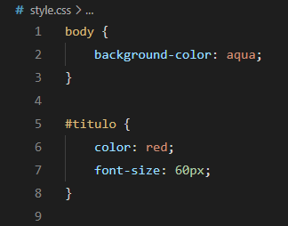
Aqui temos o resultado ao abrir o arquivo index.html pelo navegador.
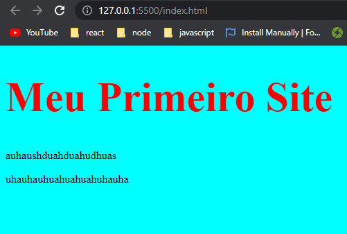
Exercícios
a ) Escreva uma lista de 5 coisas que você goste de fazer. O título (h1) deverá ser "O que eu gosto de fazer". O site no navegador deverá ser da seguinte forma:
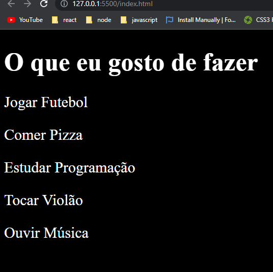
b ) Escreva uma lista com o nome de 3 planetas. O título (h1) deverá ser "Escreva o nome de 3 planetas". Os 3 parágrafos (p) devem conter a classe class="planetas" e serem estilizadas através do seletor .planetas. O site no navegador deverá ser da seguinte forma:
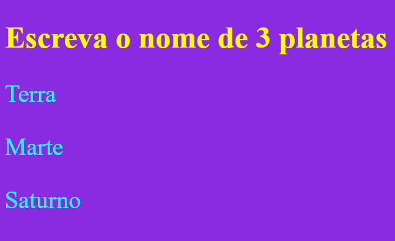
c ) Escreva uma lista com o nome de 3 frutas. O título (h1) deverá ser "Escreva o nome de 3 frutas". Cada elemento (h1 e p) deverá conter um id diferente. O site no navegador deverá ser da seguinte forma:
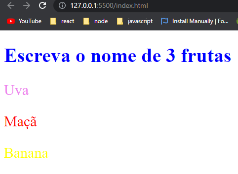
Resolução dos Exercícios
a )
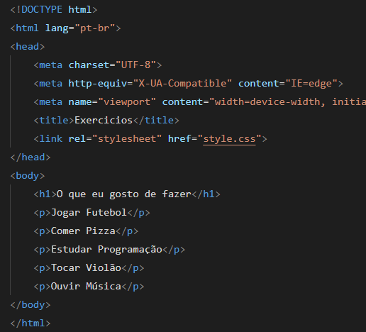
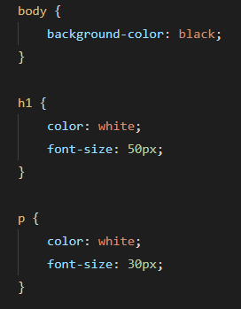
b )
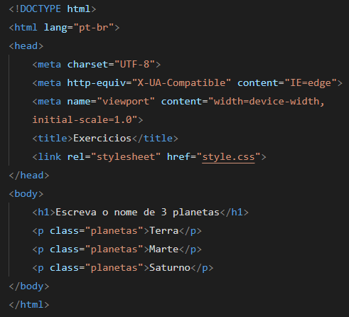
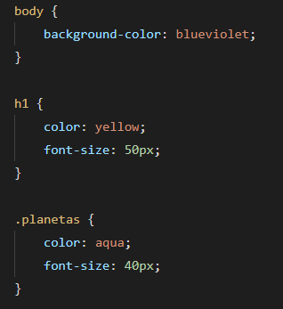
c )
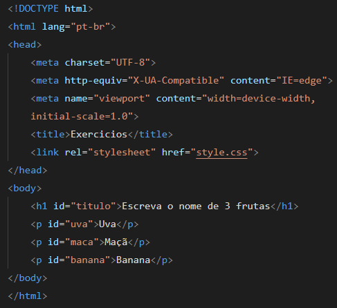
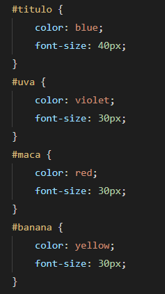